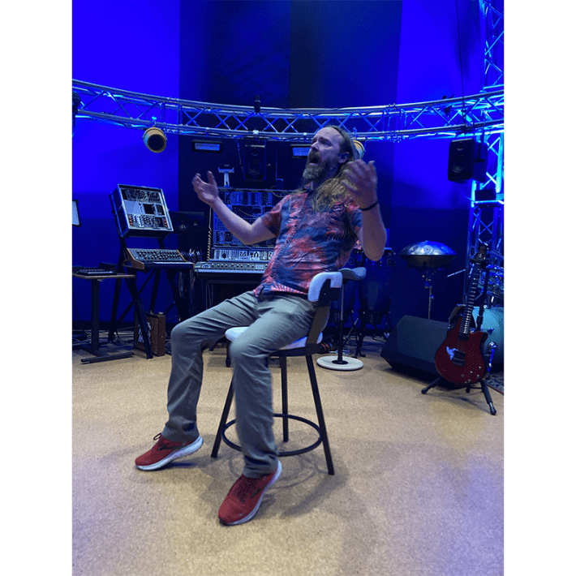
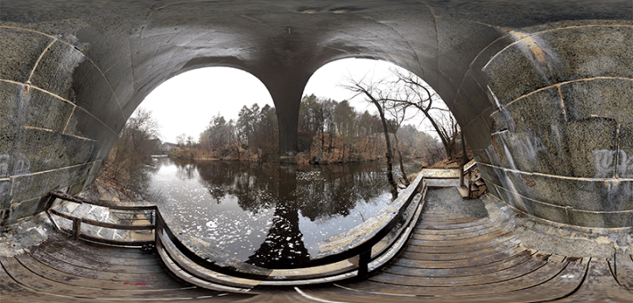

Chris Warren, aka the Echo Thief, sits in a chair in the center of his sound lab and sings. Each note hangs in the air, layering onto the next like a cake and building into a complex chord, creating a rich cathedral of sound. He is harmonizing with himself. What we hear has been filtered through an algorithm Warren created that takes a mathematical average—a geometric mean—of 150 different echoes he has collected from around the world: the underside of Byron Glacier outside Anchorage Alaska, which he says has a delicate glassy resonance, like the inside of a fishbowl; the Fort of the Three Kings in Havana, Cuba, which has a long and meaty echo; a storm sewer in Tijuana.
“It’s my opinion that as musicians, we really need to care deeply about reverb because it’s a good portion of our sound,” says Warren. “It’s the spicy, colorful part.”
For 15 years, Warren has carried a magic backpack full of recording equipment into all manner of cavernous spaces, mostly inspired by tips he collects from other musicians. When he gets there, Warren sends a simple rhythmic sound into the space and makes a series of recordings of the ways it reverberates in that space. These recording sessions, which can run anywhere from 30 seconds to 48 hours, reflect how the space responds to different high and low frequencies and the amount of time it takes for sound to bounce back.

ECHO THIEF: Chris Warren harmonizes with himself in the sound lab he helped to build at San Diego State University. Photo by Kristen French.
Warren later feeds the recordings into a script he has written in a scientific computing language known as MATLAB, which processes the echo into a high-resolution sample. It averages the reverberations he recorded over time, canceling out variation in environmental noise, such as water dripping or birds chirping. The algorithm Warren uses to average out the noise is based on a type of modeling first developed by Swiss mathematician Marcel Golay in the mid 20th century to investigate the spectral patterns in visible light. A professor of Warren’s at Stanford University, Jonathan Abel, had already repurposed Golay’s modeling for audio, but Warren tweaked it further so that he could record over periods longer than a second.
The library of echoes Warren has amassed is extra crisp and precise, can be digitally applied to any sound—this is called convolution reverb—and is available online for musicians, video game designers, and anyone else who might like to explore the world’s echoes. Warren and his wife use it to create music for their experimental duo OmniHarmonium. The echoes provide a kind of epic scenery for their songs, he says.
Byron Glacier, Chugach State Park, Alaska
Echo Bridge, Newton, Massachusetts
Geisel Library, University of California, San Diego
Salton Sea Drainage Pipe, Salton Sea
It used to be that to capture reverb, sound engineers would fire a starter pistol, pop a balloon, or clap in a cavernous space, but this would leave a lot of noise residue in the recordings. The longer Warren records, the quieter the sound he sends into a space can be—which not only limits the noise in the recording but gives him access to public places where humans might be hanging out. “You can’t go around popping balloons or firing starter pistols everywhere,” he says. He could even, theoretically, capture precise reverb in a concert hall while an orchestra is playing. Warren ultimately wants to figure out how to take continuous measurements that can gauge how reverb varies over time in a space, with changes in crowds, air temperature, wind.
Warren helped to build the sound lab at San Diego State University, where he runs a program in music recording technology and audio design, to study immersive reverberation for augmented reality—to allow gamers to experience acoustics as realistically as possible as they wander through different digital spaces. He also uses the lab to teach his students how different kinds of reverberation affect the playing of musical instruments. Every performance venue is different and a musician typically won't know what the acoustics are like until they are on the stage.

SENSATIONAL SOUND: Echo Bridge, which spans the Charles River in Newton Upper Falls, Massachusetts, is shaped in a parabolic arch. It produces 13 discrete echoes. Warren's obsession with echoes began here when he was a kid just learning to love music. Photo courtesy of Chris Warren.
Though the sound lab sits next to a performance venue, a sports stadium, and a trolley, Warren and his students never hear a single vibration from the outside world. The floor of the lab is floating, and has its own foundation, so that it doesn’t absorb vibrations from the rest of the building. And the room is an irregular octagon, all of its walls fixed at irregular angles, tilted between three and six degrees from one another, in order to provide a maximum number of surfaces against which sound can bounce. Even the ceiling is not directly opposite the floor. “Parallel surfaces,” says Warren, are “the devil.” They are like an infinity mirror for sound.
Warren fell in love with reverb when he was a kid growing up in Newton, Massachusetts. A friend told him about a spot known as Echo Bridge, a parabolic arch over the Charles River. He learned that if you stand on this little platform under the bridge and clap, “You’ll hear 13 claps come back,” he says. “And so my friends and I, we’d go down there and hang out and sing and scream and make all kinds of noise,” he says.
Those early echoes continue to reverberate through his life and work. 
California Reverb Test
This recording illustrates the effects of reverb on sound. The first half contains a snippet of a recording of a trumpet made in an anechoic chamber—a room that minimizes reverberation—taken from freesound.org. Halfway through Chris Warren added reverb from the California Tower in Balboa Park in San Diego, California.
Lead image: Pixel-Shot / Shutterstock